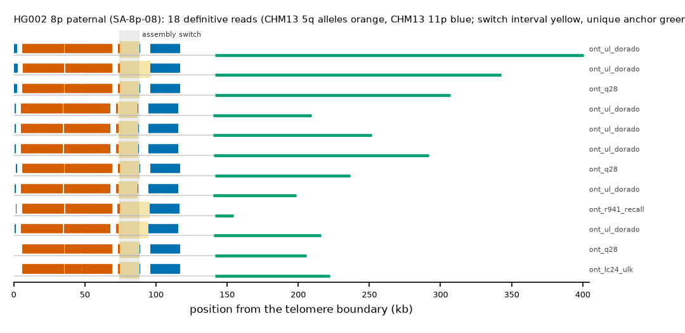

HG002 8p paternal: SA-8p-08
Claim HG002#1#chr8_PATERNAL#L. All claims
- cohort
- HG002 Q100
- individual
- HG002
- haplotype
- paternal
- arm
- 8p
- allele
- SA-8p-08 (foreign)
- model
- donor CHM13 5q, proximal CHM13 11p, recipient CHM13 8p, pattern DP
- claimed end(s)
HG002#1#chr8_PATERNAL#L- assembly switch
- 86,330 bp from the telomere boundary; on CHM13 chr11:93822; own-window projection 74100-88500 bp
- v1 verdict
- confirmed (confirmed)
- definitive tier
- definitive (>= 2 datasets)
- reads
- 18 conclusive switch-concordant, 0 discordant, 0 contradicting, 24 consistent; 18 definitive (ont_lc24_ulk,ont_q28,ont_r941_recall,ont_ul_dorado)
- by tier
- definitive:18;consistent:24
- source
- HG002 Q100 v1.1 public read alignments (16 files; 12 independent datasets after molecule de-duplication)

Conclusive and contradicting reads (31)
31 further reads are consistent (switch test passed, but no terminal telomere, anchor or integrity); they are
listed in reads.tsv.gz. Switch: 95% interval in subtelomere coordinates (kb from the
telomere boundary) and projected on CHM13 11p. Each samtools command prints the read's record
from its public file (CRAM: add the CHM13 v2.0 FASTA as -T).
| read | dataset | tier | length | switch (subtelomere, kb) | switch on CHM13 | donor units / purity | proximal units / purity | anchor (CHM13, MAPQ, unique) | own-assembly best end | fetch |
|---|---|---|---|---|---|---|---|---|---|---|
754f8544-91ad-4ac8-b22c-a18193e2a2fb | ont_lc24_ulk | definitive | 174,809 | 74.3-95.9 | chr11:84966-106566 | 315 / 1.00 | 104 / 1.00 | chr8:1998-33010, 60, 21.7 kb | HG002#1#chr8_PATERNAL#L (99.7%) ✓ | samtoolssamtools view -F 0x900 -X 'https://human-pangenomics.s3.amazonaws.com/T2T/HG002/assemblies/polishing/HG002/v1.1/mapping/ont_lc24_ulk/hg002v1.1_ont_lc24_ulk.pri.bam' 'https://human-pangenomics.s3.amazonaws.com/T2T/HG002/assemblies/polishing/HG002/v1.1/mapping/ont_lc24_ulk/hg002v1.1_ont_lc24_ulk.pri.bam.bai' 'chr8_PATERNAL:1-117668' | awk -v r='754f8544-91ad-4ac8-b22c-a18193e2a2fb' '$1==r' |
6519666f-52ed-4504-9a52-21aee9c2a0ac | ont_lc24_ulk | definitive | 225,342 | 74.1-88.5 | chr11:84821-99221 | 315 / 1.00 | 105 / 1.00 | chr8:2000-83188, 60, 71.9 kb | HG002#1#chr8_PATERNAL#L (99.8%) ✓ | samtoolssamtools view -F 0x900 -X 'https://human-pangenomics.s3.amazonaws.com/T2T/HG002/assemblies/polishing/HG002/v1.1/mapping/ont_lc24_ulk/hg002v1.1_ont_lc24_ulk.pri.bam' 'https://human-pangenomics.s3.amazonaws.com/T2T/HG002/assemblies/polishing/HG002/v1.1/mapping/ont_lc24_ulk/hg002v1.1_ont_lc24_ulk.pri.bam.bai' 'chr8_PATERNAL:1-117668' | awk -v r='6519666f-52ed-4504-9a52-21aee9c2a0ac' '$1==r' |
228fd309-a4f1-4f2b-9b11-983e83951abe | ont_lc24_ulk | definitive | 261,467 | 74.1-88.5 | chr11:84866-99266 | 315 / 1.00 | 104 / 1.00 | chr8:1998-119738, 60, 108.4 kb | HG002#1#chr8_PATERNAL#L (99.8%) ✓ | samtoolssamtools view -F 0x900 -X 'https://human-pangenomics.s3.amazonaws.com/T2T/HG002/assemblies/polishing/HG002/v1.1/mapping/ont_lc24_ulk/hg002v1.1_ont_lc24_ulk.pri.bam' 'https://human-pangenomics.s3.amazonaws.com/T2T/HG002/assemblies/polishing/HG002/v1.1/mapping/ont_lc24_ulk/hg002v1.1_ont_lc24_ulk.pri.bam.bai' 'chr8_PATERNAL:1-117668' | awk -v r='228fd309-a4f1-4f2b-9b11-983e83951abe' '$1==r' |
ffe5dff4-6df5-4940-814c-003f83800287 | ont_q28 | definitive | 237,809 | 74.1-88.5 | chr11:84826-99226 | 317 / 0.99 | 105 / 1.00 | chr8:1998-97507, 60, 86.2 kb | HG002#1#chr8_PATERNAL#L (99.9%) ✓ | samtoolssamtools view -F 0x900 -X 'https://human-pangenomics.s3.amazonaws.com/T2T/HG002/assemblies/polishing/HG002/v1.1/mapping/ont_epi2me_q28/hg002v1.1_ont_epi2me_q28.pri.bam' 'https://human-pangenomics.s3.amazonaws.com/T2T/HG002/assemblies/polishing/HG002/v1.1/mapping/ont_epi2me_q28/hg002v1.1_ont_epi2me_q28.pri.bam.bai' 'chr8_PATERNAL:1-117668' | awk -v r='ffe5dff4-6df5-4940-814c-003f83800287' '$1==r' |
c5ca469d-8ac4-49c6-8914-9e4cbf0ff6ad | ont_q28 | definitive | 232,804 | 74.1-88.5 | chr11:84889-99289 | 314 / 1.00 | 104 / 1.00 | chr8:1998-90676, 60, 79.4 kb | HG002#1#chr8_PATERNAL#L (99.8%) ✓ | samtoolssamtools view -F 0x900 -X 'https://human-pangenomics.s3.amazonaws.com/T2T/HG002/assemblies/polishing/HG002/v1.1/mapping/ont_epi2me_q28/hg002v1.1_ont_epi2me_q28.pri.bam' 'https://human-pangenomics.s3.amazonaws.com/T2T/HG002/assemblies/polishing/HG002/v1.1/mapping/ont_epi2me_q28/hg002v1.1_ont_epi2me_q28.pri.bam.bai' 'chr8_PATERNAL:1-117668' | awk -v r='c5ca469d-8ac4-49c6-8914-9e4cbf0ff6ad' '$1==r' |
517980e8-e1cd-4a36-a843-9e60a076b9a2 | ont_q28 | definitive | 208,740 | 74.1-88.5 | chr11:84839-99239 | 315 / 1.00 | 105 / 1.00 | chr8:1998-66424, 60, 55.1 kb | HG002#1#chr8_PATERNAL#L (99.8%) ✓ | samtoolssamtools view -F 0x900 -X 'https://human-pangenomics.s3.amazonaws.com/T2T/HG002/assemblies/polishing/HG002/v1.1/mapping/ont_epi2me_q28/hg002v1.1_ont_epi2me_q28.pri.bam' 'https://human-pangenomics.s3.amazonaws.com/T2T/HG002/assemblies/polishing/HG002/v1.1/mapping/ont_epi2me_q28/hg002v1.1_ont_epi2me_q28.pri.bam.bai' 'chr8_PATERNAL:1-117668' | awk -v r='517980e8-e1cd-4a36-a843-9e60a076b9a2' '$1==r' |
2e4e1d19-db75-4d9d-bbb0-da1d669a7cd3 | ont_q28 | definitive | 202,884 | 74.1-88.5 | chr11:84856-99256 | 314 / 1.00 | 105 / 1.00 | chr8:1998-60913, 60, 49.6 kb | HG002#1#chr8_PATERNAL#L (99.5%) ✓ | samtoolssamtools view -F 0x900 -X 'https://human-pangenomics.s3.amazonaws.com/T2T/HG002/assemblies/polishing/HG002/v1.1/mapping/ont_epi2me_q28/hg002v1.1_ont_epi2me_q28.pri.bam' 'https://human-pangenomics.s3.amazonaws.com/T2T/HG002/assemblies/polishing/HG002/v1.1/mapping/ont_epi2me_q28/hg002v1.1_ont_epi2me_q28.pri.bam.bai' 'chr8_PATERNAL:1-117668' | awk -v r='2e4e1d19-db75-4d9d-bbb0-da1d669a7cd3' '$1==r' |
37d06699-3e75-4635-ac37-d6e2e4a01a06 | ont_q28 | definitive | 307,719 | 74.1-88.5 | chr11:84844-99244 | 320 / 0.98 | 105 / 1.00 | chr8:1998-168018, 60, 154.0 kb | HG002#1#chr8_PATERNAL#L (99.8%) ✓ | samtoolssamtools view -F 0x900 -X 'https://human-pangenomics.s3.amazonaws.com/T2T/HG002/assemblies/polishing/HG002/v1.1/mapping/ont_epi2me_q28/hg002v1.1_ont_epi2me_q28.pri.bam' 'https://human-pangenomics.s3.amazonaws.com/T2T/HG002/assemblies/polishing/HG002/v1.1/mapping/ont_epi2me_q28/hg002v1.1_ont_epi2me_q28.pri.bam.bai' 'chr8_PATERNAL:1-117668' | awk -v r='37d06699-3e75-4635-ac37-d6e2e4a01a06' '$1==r' |
7772a727-66b6-4c7d-b51b-c4e5df316cfb | ont_r941_recall | definitive | 157,951 | 74.1-95.7 | chr11:84993-106593 | 317 / 0.99 | 104 / 1.00 | chr8:1998-15074, 60, 3.8 kb | HG002#1#chr8_PATERNAL#L (98.5%) ✓ | samtoolssamtools view -F 0x900 -X 'https://human-pangenomics.s3.amazonaws.com/T2T/HG002/assemblies/polishing/HG002/v1.1/mapping/ont_methylation_recall_oct2024/03_08_22_R941_HG002.pri.bam' 'https://human-pangenomics.s3.amazonaws.com/T2T/HG002/assemblies/polishing/HG002/v1.1/mapping/ont_methylation_recall_oct2024/03_08_22_R941_HG002.pri.bam.bai' 'chr8_PATERNAL:1-117668' | awk -v r='7772a727-66b6-4c7d-b51b-c4e5df316cfb' '$1==r' |
1f172b36-25bd-4a4b-a9b5-467d8dd2a16d | ont_r941_recall | definitive | 219,889 | 76.7-98.3 | chr11:84985-106585 | 314 / 0.99 | 103 / 1.00 | chr8:1998-77607, 60, 66.3 kb | HG002#1#chr8_PATERNAL#L (94.4%) ✓ | samtoolssamtools view -F 0x900 -X 'https://human-pangenomics.s3.amazonaws.com/T2T/HG002/assemblies/polishing/HG002/v1.1/mapping/ont_methylation_recall_oct2024/03_08_22_R941_HG002.pri.bam' 'https://human-pangenomics.s3.amazonaws.com/T2T/HG002/assemblies/polishing/HG002/v1.1/mapping/ont_methylation_recall_oct2024/03_08_22_R941_HG002.pri.bam.bai' 'chr8_PATERNAL:1-117668' | awk -v r='1f172b36-25bd-4a4b-a9b5-467d8dd2a16d' '$1==r' |
8e4e4d70-5e09-4fe3-9a79-3a6212607a0e | ont_ul_dorado | definitive | 342,825 | 74.3-95.9 | chr11:84991-106591 | 321 / 0.98 | 104 / 1.00 | chr8:1998-204015, 60, 190.0 kb | HG002#1#chr8_PATERNAL#L (98.9%) ✓ | samtoolssamtools view -F 0x900 -X 'https://human-pangenomics.s3.amazonaws.com/T2T/HG002/assemblies/polishing/HG002/v1.1/mapping/ont_r10_ul_dorado/hg002v1.1_ont_r10_ul_dorado.pri.bam' 'https://human-pangenomics.s3.amazonaws.com/T2T/HG002/assemblies/polishing/HG002/v1.1/mapping/ont_r10_ul_dorado/hg002v1.1_ont_r10_ul_dorado.pri.bam.bai' 'chr8_PATERNAL:1-117668' | awk -v r='8e4e4d70-5e09-4fe3-9a79-3a6212607a0e' '$1==r' |
f54a07a1-06a4-421f-b6ec-f597dedea0b8 | ont_ul_dorado | definitive | 252,923 | 73.1-87.5 | chr11:84941-99341 | 317 / 0.99 | 105 / 1.00 | chr8:1998-113752, 60, 102.4 kb | HG002#1#chr8_PATERNAL#L (98.9%) ✓ | samtoolssamtools view -F 0x900 -X 'https://human-pangenomics.s3.amazonaws.com/T2T/HG002/assemblies/polishing/HG002/v1.1/mapping/ont_r10_ul_dorado/hg002v1.1_ont_r10_ul_dorado.pri.bam' 'https://human-pangenomics.s3.amazonaws.com/T2T/HG002/assemblies/polishing/HG002/v1.1/mapping/ont_r10_ul_dorado/hg002v1.1_ont_r10_ul_dorado.pri.bam.bai' 'chr8_PATERNAL:1-117668' | awk -v r='f54a07a1-06a4-421f-b6ec-f597dedea0b8' '$1==r' |
4d255bd6-4a4a-47ac-836a-4b164ea25878 | ont_ul_dorado | definitive | 164,479 | 74.1-95.7 | chr11:84956-106556 | 315 / 0.97 | 104 / 1.00 | chr8:1998-24646, 60, 13.3 kb | HG002#1#chr8_PATERNAL#L (97.9%) ✓ | samtoolssamtools view -F 0x900 -X 'https://human-pangenomics.s3.amazonaws.com/T2T/HG002/assemblies/polishing/HG002/v1.1/mapping/ont_r10_ul_dorado/hg002v1.1_ont_r10_ul_dorado.pri.bam' 'https://human-pangenomics.s3.amazonaws.com/T2T/HG002/assemblies/polishing/HG002/v1.1/mapping/ont_r10_ul_dorado/hg002v1.1_ont_r10_ul_dorado.pri.bam.bai' 'chr8_PATERNAL:1-117668' | awk -v r='4d255bd6-4a4a-47ac-836a-4b164ea25878' '$1==r' |
57fbae73-b81e-4700-8064-8c45724e6a24 | ont_ul_dorado | definitive | 400,887 | 74.1-88.5 | chr11:84869-99269 | 323 / 0.98 | 105 / 1.00 | chr8:1998-262076, 60, 248.0 kb | HG002#1#chr8_PATERNAL#L (99.2%) ✓ | samtoolssamtools view -F 0x900 -X 'https://human-pangenomics.s3.amazonaws.com/T2T/HG002/assemblies/polishing/HG002/v1.1/mapping/ont_r10_ul_dorado/hg002v1.1_ont_r10_ul_dorado.pri.bam' 'https://human-pangenomics.s3.amazonaws.com/T2T/HG002/assemblies/polishing/HG002/v1.1/mapping/ont_r10_ul_dorado/hg002v1.1_ont_r10_ul_dorado.pri.bam.bai' 'chr8_PATERNAL:1-117668' | awk -v r='57fbae73-b81e-4700-8064-8c45724e6a24' '$1==r' |
01563d8b-afcb-4944-98af-f2ac8b5ae008 | ont_ul_dorado | definitive | 293,140 | 73.1-87.5 | chr11:84908-99308 | 317 / 0.99 | 105 / 1.00 | chr8:1998-153825, 60, 142.5 kb | HG002#1#chr8_PATERNAL#L (99.5%) ✓ | samtoolssamtools view -F 0x900 -X 'https://human-pangenomics.s3.amazonaws.com/T2T/HG002/assemblies/polishing/HG002/v1.1/mapping/ont_r10_ul_dorado/hg002v1.1_ont_r10_ul_dorado.pri.bam' 'https://human-pangenomics.s3.amazonaws.com/T2T/HG002/assemblies/polishing/HG002/v1.1/mapping/ont_r10_ul_dorado/hg002v1.1_ont_r10_ul_dorado.pri.bam.bai' 'chr8_PATERNAL:1-117668' | awk -v r='01563d8b-afcb-4944-98af-f2ac8b5ae008' '$1==r' |
ae59b98b-aea7-4df5-8c64-7339f713d31e | ont_ul_dorado | definitive | 217,159 | 73.1-94.7 | chr11:85001-106601 | 316 / 0.99 | 104 / 1.00 | chr8:1998-77758, 60, 66.4 kb | HG002#1#chr8_PATERNAL#L (99.1%) ✓ | samtoolssamtools view -F 0x900 -X 'https://human-pangenomics.s3.amazonaws.com/T2T/HG002/assemblies/polishing/HG002/v1.1/mapping/ont_r10_ul_dorado/hg002v1.1_ont_r10_ul_dorado.pri.bam' 'https://human-pangenomics.s3.amazonaws.com/T2T/HG002/assemblies/polishing/HG002/v1.1/mapping/ont_r10_ul_dorado/hg002v1.1_ont_r10_ul_dorado.pri.bam.bai' 'chr8_PATERNAL:1-117668' | awk -v r='ae59b98b-aea7-4df5-8c64-7339f713d31e' '$1==r' |
e3fbe96f-d3d1-4919-8b7f-480119ec7c50 | ont_ul_dorado | definitive | 199,677 | 73.1-87.3 | chr11:85010-99210 | 316 / 0.99 | 105 / 1.00 | chr8:1998-60265, 60, 48.9 kb | HG002#1#chr8_PATERNAL#L (99.1%) ✓ | samtoolssamtools view -F 0x900 -X 'https://human-pangenomics.s3.amazonaws.com/T2T/HG002/assemblies/polishing/HG002/v1.1/mapping/ont_r10_ul_dorado/hg002v1.1_ont_r10_ul_dorado.pri.bam' 'https://human-pangenomics.s3.amazonaws.com/T2T/HG002/assemblies/polishing/HG002/v1.1/mapping/ont_r10_ul_dorado/hg002v1.1_ont_r10_ul_dorado.pri.bam.bai' 'chr8_PATERNAL:1-117668' | awk -v r='e3fbe96f-d3d1-4919-8b7f-480119ec7c50' '$1==r' |
b17c4851-1402-4106-a103-c3dfe7d85f92 | ont_ul_dorado | definitive | 209,658 | 72.9-87.3 | chr11:84824-99224 | 317 / 0.99 | 105 / 1.00 | chr8:1998-71209, 60, 59.9 kb | HG002#1#chr8_PATERNAL#L (99.1%) ✓ | samtoolssamtools view -F 0x900 -X 'https://human-pangenomics.s3.amazonaws.com/T2T/HG002/assemblies/polishing/HG002/v1.1/mapping/ont_r10_ul_dorado/hg002v1.1_ont_r10_ul_dorado.pri.bam' 'https://human-pangenomics.s3.amazonaws.com/T2T/HG002/assemblies/polishing/HG002/v1.1/mapping/ont_r10_ul_dorado/hg002v1.1_ont_r10_ul_dorado.pri.bam.bai' 'chr8_PATERNAL:1-117668' | awk -v r='b17c4851-1402-4106-a103-c3dfe7d85f92' '$1==r' |
517980e8-e1cd-4a36-a843-9e60a076b9a2 | ont_herro | definitive (not counted: derived) | 208,754 | 74.1-88.5 | chr11:84813-99213 | 315 / 1.00 | 105 / 1.00 | chr8:1998-66424, 60, 55.1 kb | HG002#1#chr8_PATERNAL#L (99.8%) ✓ | samtoolssamtools view -F 0x900 -X 'https://human-pangenomics.s3.amazonaws.com/T2T/HG002/assemblies/polishing/HG002/v1.1/mapping/ont_HERRO_corrected/hg002v1.1_ont_herro_corrected.pri.bam' 'https://human-pangenomics.s3.amazonaws.com/T2T/HG002/assemblies/polishing/HG002/v1.1/mapping/ont_HERRO_corrected/hg002v1.1_ont_herro_corrected.pri.bam.bai' 'chr8_PATERNAL:1-117668' | awk -v r='517980e8-e1cd-4a36-a843-9e60a076b9a2' '$1==r' |
ffe5dff4-6df5-4940-814c-003f83800287 | ont_herro | definitive (not counted: derived) | 237,742 | 74.1-88.5 | chr11:84814-99214 | 317 / 0.99 | 105 / 1.00 | chr8:1998-97505, 60, 86.2 kb | HG002#1#chr8_PATERNAL#L (99.9%) ✓ | samtoolssamtools view -F 0x900 -X 'https://human-pangenomics.s3.amazonaws.com/T2T/HG002/assemblies/polishing/HG002/v1.1/mapping/ont_HERRO_corrected/hg002v1.1_ont_herro_corrected.pri.bam' 'https://human-pangenomics.s3.amazonaws.com/T2T/HG002/assemblies/polishing/HG002/v1.1/mapping/ont_HERRO_corrected/hg002v1.1_ont_herro_corrected.pri.bam.bai' 'chr8_PATERNAL:1-117668' | awk -v r='ffe5dff4-6df5-4940-814c-003f83800287' '$1==r' |
2e4e1d19-db75-4d9d-bbb0-da1d669a7cd3 | ont_herro | definitive (not counted: derived) | 202,842 | 74.1-88.5 | chr11:84814-99214 | 315 / 1.00 | 105 / 1.00 | chr8:1998-60911, 60, 49.6 kb | HG002#1#chr8_PATERNAL#L (99.5%) ✓ | samtoolssamtools view -F 0x900 -X 'https://human-pangenomics.s3.amazonaws.com/T2T/HG002/assemblies/polishing/HG002/v1.1/mapping/ont_HERRO_corrected/hg002v1.1_ont_herro_corrected.pri.bam' 'https://human-pangenomics.s3.amazonaws.com/T2T/HG002/assemblies/polishing/HG002/v1.1/mapping/ont_HERRO_corrected/hg002v1.1_ont_herro_corrected.pri.bam.bai' 'chr8_PATERNAL:1-117668' | awk -v r='2e4e1d19-db75-4d9d-bbb0-da1d669a7cd3' '$1==r' |
c5ca469d-8ac4-49c6-8914-9e4cbf0ff6ad | ont_herro | definitive (not counted: derived) | 232,776 | 73.1-87.5 | chr11:84906-99306 | 314 / 1.00 | 105 / 1.00 | chr8:1998-90674, 60, 79.4 kb | HG002#1#chr8_PATERNAL#L (99.8%) ✓ | samtoolssamtools view -F 0x900 -X 'https://human-pangenomics.s3.amazonaws.com/T2T/HG002/assemblies/polishing/HG002/v1.1/mapping/ont_HERRO_corrected/hg002v1.1_ont_herro_corrected.pri.bam' 'https://human-pangenomics.s3.amazonaws.com/T2T/HG002/assemblies/polishing/HG002/v1.1/mapping/ont_HERRO_corrected/hg002v1.1_ont_herro_corrected.pri.bam.bai' 'chr8_PATERNAL:1-117668' | awk -v r='c5ca469d-8ac4-49c6-8914-9e4cbf0ff6ad' '$1==r' |
37d06699-3e75-4635-ac37-d6e2e4a01a06 | ont_herro | definitive (not counted: derived) | 307,811 | 74.1-88.5 | chr11:84815-99215 | 322 / 0.98 | 105 / 1.00 | chr8:1998-168016, 60, 154.0 kb | HG002#1#chr8_PATERNAL#L (99.8%) ✓ | samtoolssamtools view -F 0x900 -X 'https://human-pangenomics.s3.amazonaws.com/T2T/HG002/assemblies/polishing/HG002/v1.1/mapping/ont_HERRO_corrected/hg002v1.1_ont_herro_corrected.pri.bam' 'https://human-pangenomics.s3.amazonaws.com/T2T/HG002/assemblies/polishing/HG002/v1.1/mapping/ont_HERRO_corrected/hg002v1.1_ont_herro_corrected.pri.bam.bai' 'chr8_PATERNAL:1-117668' | awk -v r='37d06699-3e75-4635-ac37-d6e2e4a01a06' '$1==r' |
ffe5dff4-6df5-4940-814c-003f83800287 | ont_q28_lc24 | definitive (not counted: duplicate molecule) | 237,809 | 74.1-88.5 | chr11:84826-99226 | 317 / 0.99 | 105 / 1.00 | chr8:1998-97507, 60, 86.2 kb | HG002#1#chr8_PATERNAL#L (99.9%) ✓ | samtoolssamtools view -F 0x900 -X 'https://human-pangenomics.s3.amazonaws.com/T2T/HG002/assemblies/polishing/HG002/v1.1/mapping/ont_q28_lc24/hg002v1.1_ont_q28_lc24.bam' 'https://human-pangenomics.s3.amazonaws.com/T2T/HG002/assemblies/polishing/HG002/v1.1/mapping/ont_q28_lc24/hg002v1.1_ont_q28_lc24.bam.bai' 'chr8_PATERNAL:1-117668' | awk -v r='ffe5dff4-6df5-4940-814c-003f83800287' '$1==r' |
c5ca469d-8ac4-49c6-8914-9e4cbf0ff6ad | ont_q28_lc24 | definitive (not counted: duplicate molecule) | 232,804 | 74.1-88.5 | chr11:84889-99289 | 314 / 1.00 | 104 / 1.00 | chr8:1998-90676, 60, 79.4 kb | HG002#1#chr8_PATERNAL#L (99.8%) ✓ | samtoolssamtools view -F 0x900 -X 'https://human-pangenomics.s3.amazonaws.com/T2T/HG002/assemblies/polishing/HG002/v1.1/mapping/ont_q28_lc24/hg002v1.1_ont_q28_lc24.bam' 'https://human-pangenomics.s3.amazonaws.com/T2T/HG002/assemblies/polishing/HG002/v1.1/mapping/ont_q28_lc24/hg002v1.1_ont_q28_lc24.bam.bai' 'chr8_PATERNAL:1-117668' | awk -v r='c5ca469d-8ac4-49c6-8914-9e4cbf0ff6ad' '$1==r' |
517980e8-e1cd-4a36-a843-9e60a076b9a2 | ont_q28_lc24 | definitive (not counted: duplicate molecule) | 208,740 | 74.1-88.5 | chr11:84839-99239 | 315 / 1.00 | 105 / 1.00 | chr8:1998-66424, 60, 55.1 kb | HG002#1#chr8_PATERNAL#L (99.8%) ✓ | samtoolssamtools view -F 0x900 -X 'https://human-pangenomics.s3.amazonaws.com/T2T/HG002/assemblies/polishing/HG002/v1.1/mapping/ont_q28_lc24/hg002v1.1_ont_q28_lc24.bam' 'https://human-pangenomics.s3.amazonaws.com/T2T/HG002/assemblies/polishing/HG002/v1.1/mapping/ont_q28_lc24/hg002v1.1_ont_q28_lc24.bam.bai' 'chr8_PATERNAL:1-117668' | awk -v r='517980e8-e1cd-4a36-a843-9e60a076b9a2' '$1==r' |
2e4e1d19-db75-4d9d-bbb0-da1d669a7cd3 | ont_q28_lc24 | definitive (not counted: duplicate molecule) | 202,884 | 74.1-88.5 | chr11:84856-99256 | 314 / 1.00 | 105 / 1.00 | chr8:1998-60913, 60, 49.6 kb | HG002#1#chr8_PATERNAL#L (99.5%) ✓ | samtoolssamtools view -F 0x900 -X 'https://human-pangenomics.s3.amazonaws.com/T2T/HG002/assemblies/polishing/HG002/v1.1/mapping/ont_q28_lc24/hg002v1.1_ont_q28_lc24.bam' 'https://human-pangenomics.s3.amazonaws.com/T2T/HG002/assemblies/polishing/HG002/v1.1/mapping/ont_q28_lc24/hg002v1.1_ont_q28_lc24.bam.bai' 'chr8_PATERNAL:1-117668' | awk -v r='2e4e1d19-db75-4d9d-bbb0-da1d669a7cd3' '$1==r' |
754f8544-91ad-4ac8-b22c-a18193e2a2fb | ont_q28_lc24 | definitive (not counted: duplicate molecule) | 174,809 | 74.3-95.9 | chr11:84966-106566 | 315 / 1.00 | 104 / 1.00 | chr8:1998-33010, 60, 21.7 kb | HG002#1#chr8_PATERNAL#L (99.7%) ✓ | samtoolssamtools view -F 0x900 -X 'https://human-pangenomics.s3.amazonaws.com/T2T/HG002/assemblies/polishing/HG002/v1.1/mapping/ont_q28_lc24/hg002v1.1_ont_q28_lc24.bam' 'https://human-pangenomics.s3.amazonaws.com/T2T/HG002/assemblies/polishing/HG002/v1.1/mapping/ont_q28_lc24/hg002v1.1_ont_q28_lc24.bam.bai' 'chr8_PATERNAL:1-117668' | awk -v r='754f8544-91ad-4ac8-b22c-a18193e2a2fb' '$1==r' |
6519666f-52ed-4504-9a52-21aee9c2a0ac | ont_q28_lc24 | definitive (not counted: duplicate molecule) | 225,342 | 74.1-88.5 | chr11:84821-99221 | 315 / 1.00 | 105 / 1.00 | chr8:2000-83188, 60, 71.9 kb | HG002#1#chr8_PATERNAL#L (99.8%) ✓ | samtoolssamtools view -F 0x900 -X 'https://human-pangenomics.s3.amazonaws.com/T2T/HG002/assemblies/polishing/HG002/v1.1/mapping/ont_q28_lc24/hg002v1.1_ont_q28_lc24.bam' 'https://human-pangenomics.s3.amazonaws.com/T2T/HG002/assemblies/polishing/HG002/v1.1/mapping/ont_q28_lc24/hg002v1.1_ont_q28_lc24.bam.bai' 'chr8_PATERNAL:1-117668' | awk -v r='6519666f-52ed-4504-9a52-21aee9c2a0ac' '$1==r' |
228fd309-a4f1-4f2b-9b11-983e83951abe | ont_q28_lc24 | definitive (not counted: duplicate molecule) | 261,467 | 74.1-88.5 | chr11:84866-99266 | 315 / 1.00 | 104 / 1.00 | chr8:1998-119738, 60, 108.4 kb | HG002#1#chr8_PATERNAL#L (99.8%) ✓ | samtoolssamtools view -F 0x900 -X 'https://human-pangenomics.s3.amazonaws.com/T2T/HG002/assemblies/polishing/HG002/v1.1/mapping/ont_q28_lc24/hg002v1.1_ont_q28_lc24.bam' 'https://human-pangenomics.s3.amazonaws.com/T2T/HG002/assemblies/polishing/HG002/v1.1/mapping/ont_q28_lc24/hg002v1.1_ont_q28_lc24.bam.bai' 'chr8_PATERNAL:1-117668' | awk -v r='228fd309-a4f1-4f2b-9b11-983e83951abe' '$1==r' |
37d06699-3e75-4635-ac37-d6e2e4a01a06 | ont_q28_lc24 | definitive (not counted: duplicate molecule) | 307,719 | 74.1-88.5 | chr11:84844-99244 | 320 / 0.98 | 105 / 1.00 | chr8:1998-168018, 60, 154.0 kb | HG002#1#chr8_PATERNAL#L (99.8%) ✓ | samtoolssamtools view -F 0x900 -X 'https://human-pangenomics.s3.amazonaws.com/T2T/HG002/assemblies/polishing/HG002/v1.1/mapping/ont_q28_lc24/hg002v1.1_ont_q28_lc24.bam' 'https://human-pangenomics.s3.amazonaws.com/T2T/HG002/assemblies/polishing/HG002/v1.1/mapping/ont_q28_lc24/hg002v1.1_ont_q28_lc24.bam.bai' 'chr8_PATERNAL:1-117668' | awk -v r='37d06699-3e75-4635-ac37-d6e2e4a01a06' '$1==r' |
Files
CRAM/BAM on CHM13 v2.0, BAM on the person's own assembly windows and the window FASTA: release asset subtel_read_evidence_v1_HG002_Q100.tar.gz, directory read_evidence_v1/HG002_Q100/HG002_1_chr8_PATERNAL_L/ (downloads).
Re-derive this verdict
git clone https://github.com/jlanej/human-subtelomere-atlas && cd human-subtelomere-atlas
evidence/replicate_claim.sh 'HG002#1#chr8_PATERNAL#L'The script fetches the cited reads from the public source by region and read ID, re-runs the frozen criteria and compares every per-read and claim verdict with this page (details).